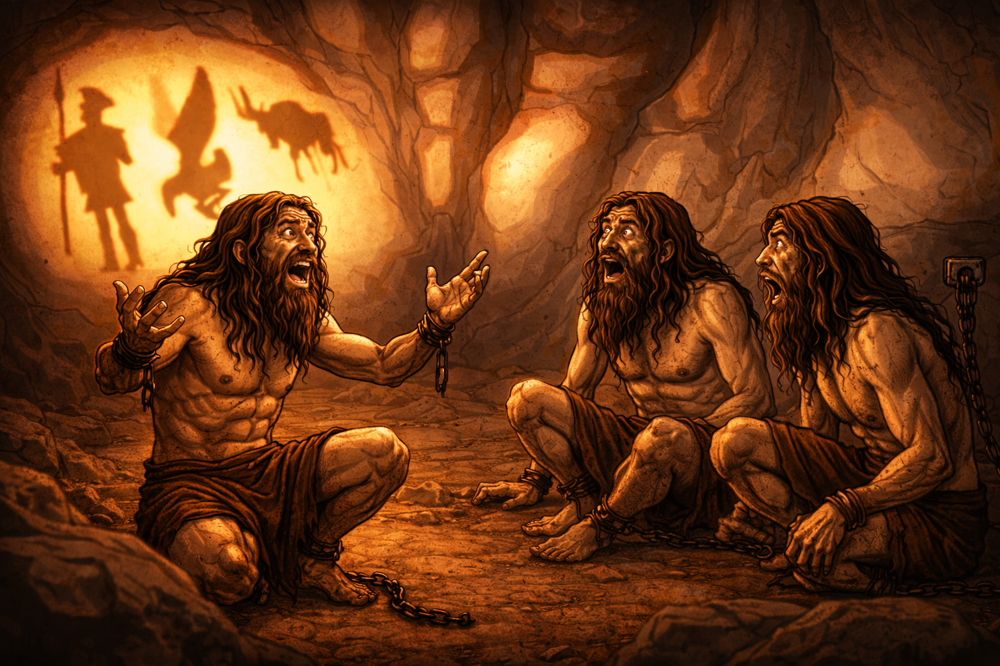

Les cuentas alegremente sobre tu descubrimiento, pero ellos no te creen y te dicen que estás loco, que es imposible que exista algo más allá de la cueva. Esto hace que te sientas frustrado y triste por su falta de comprensión, pero decides no rendirte y seguir explicandoles como todo lo que estan viendo no es real, sino una ilusión creada para mantenerlos atrapados en la cueva hasta su muerte. Sin embargo, ellos siguen sin entender y te miran con lástima, como si fueras un loco que no sabe lo que dice.

Imagen generada a partir de la principal con ChatGPT 5.2 Instant